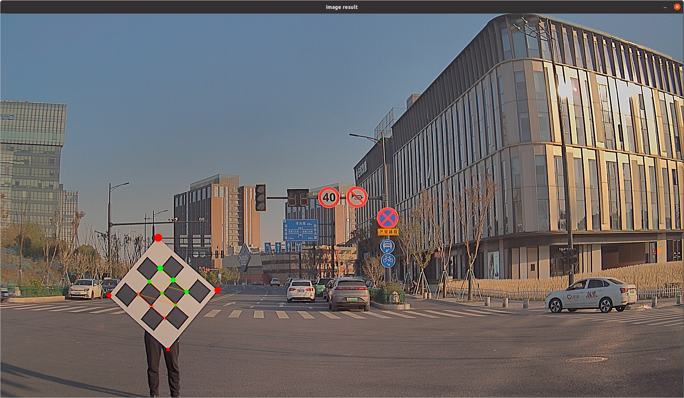
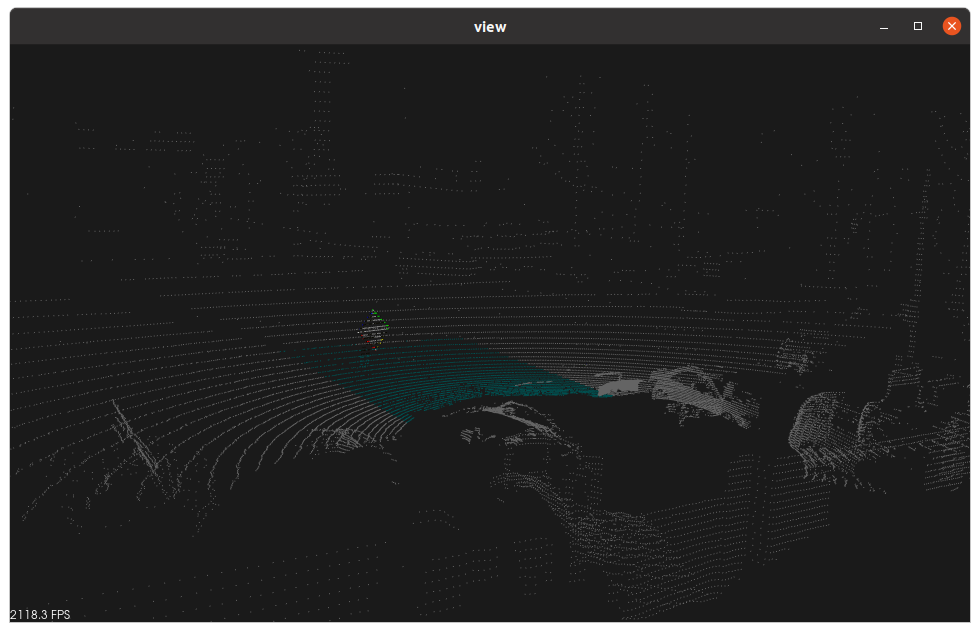
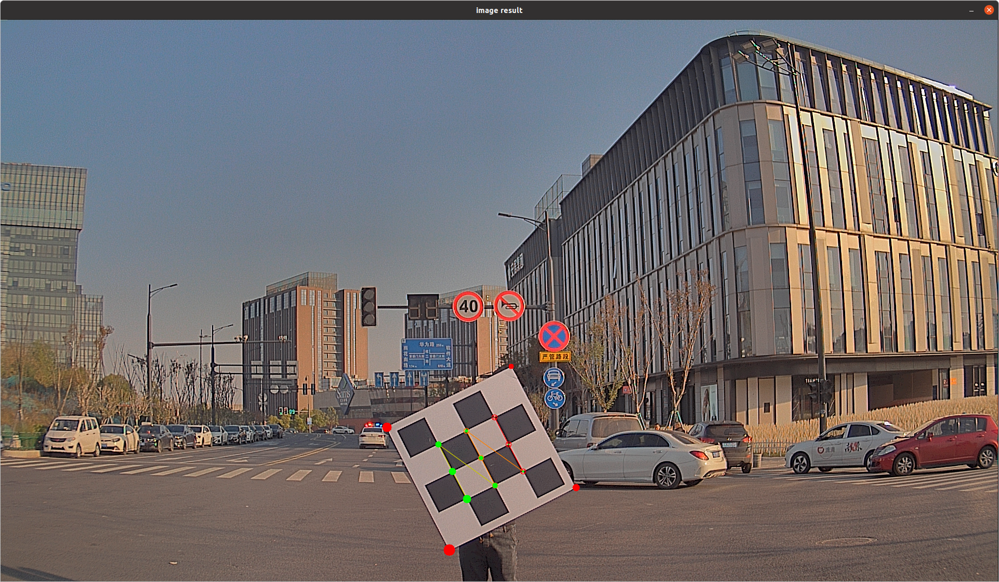
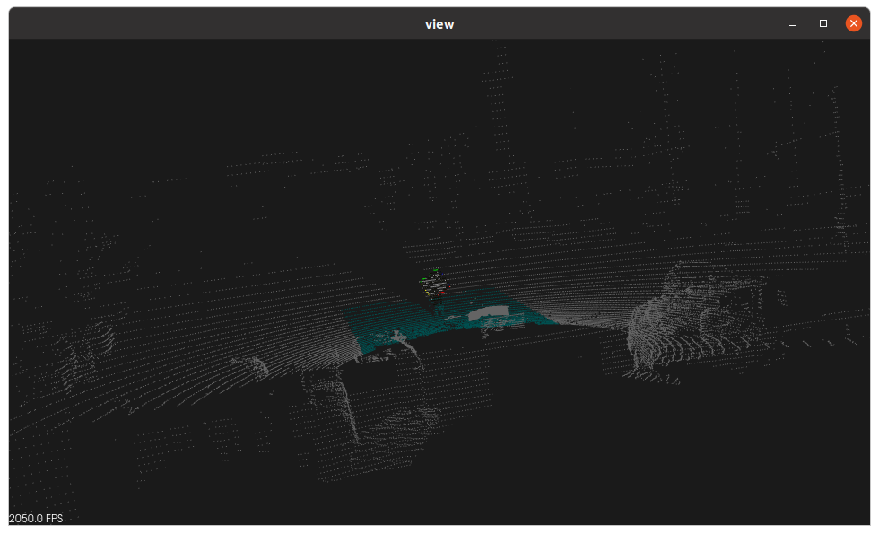
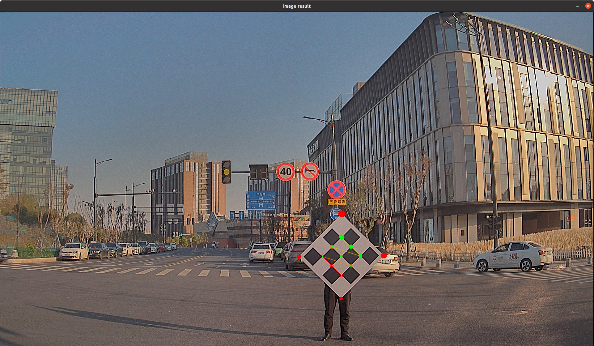
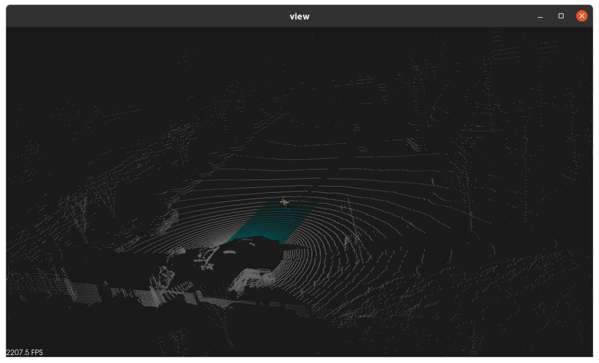
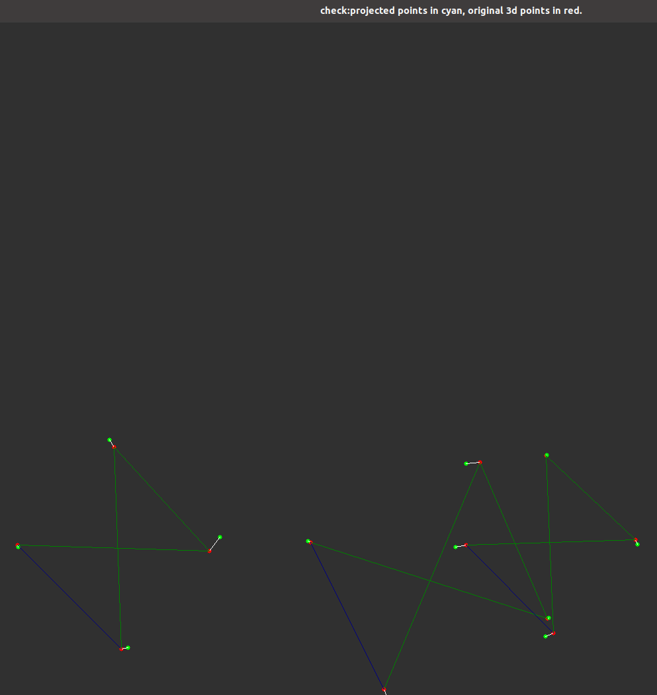
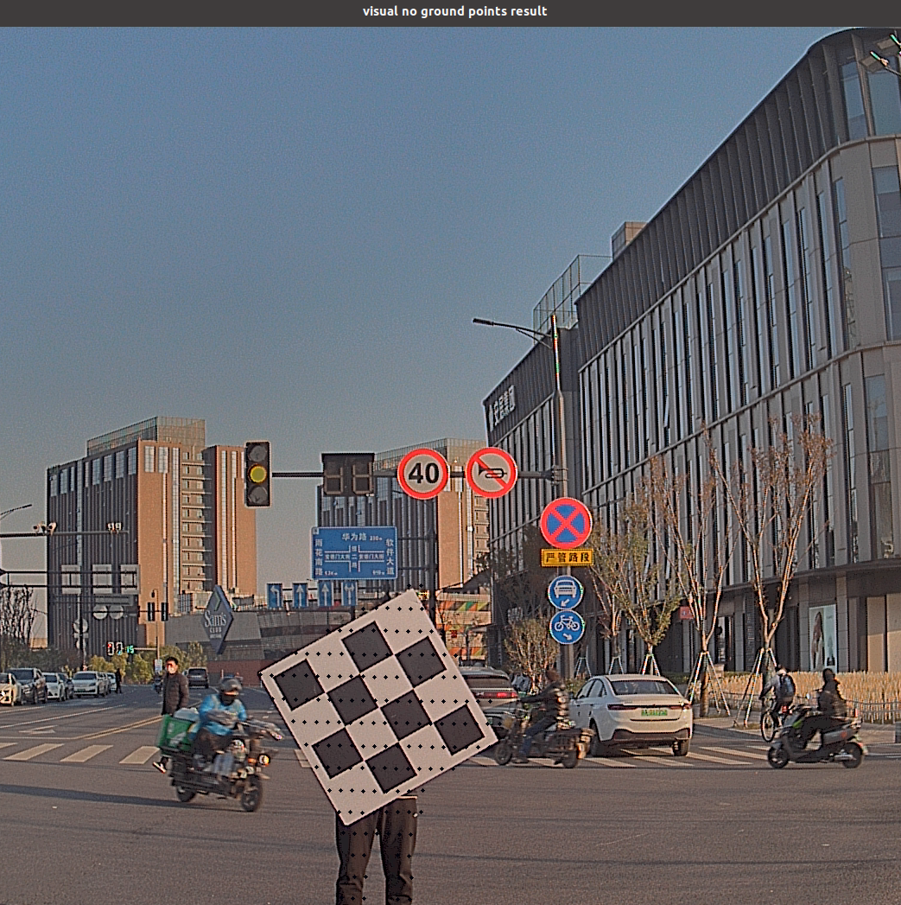
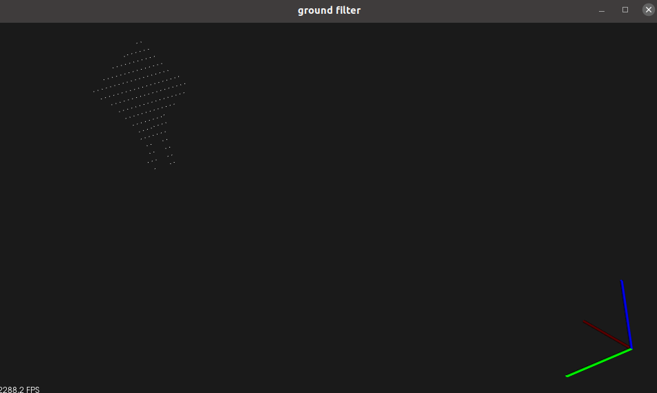

标定工具
标定工具使用来自 AutoCore 的 Lidar-Camera-Calib ，一款轻量级的激光雷达-相机离线标定的自动工具包。标定的基本想法是：
- 从图像和点云中提取棋盘角的角/边缘
- 使用 PnP(Perspective-n-Point) 大致计算转换矩阵
- 使用基于多个数据对的批量优化得到更为精确的结果
- 目视检查以验证结果
为了提升优化性能，应该在不同的位置收集数个数据对用于计算。
实操
安装标定工具
Lidar-Camera-Calib 的安装过程在另一篇博客中详细说。
添加环境变量
执行命令：
cd lidar-cam-calibrelated执行命令：
source devel/setup.bash
准备数据
从以下地址下载示例数据：dataPairs4lidar_cam_calib.zip - Google 云端硬盘
该文件中包含 4 对图像和点云数据，其中前 3 对用于标定，最后一对用于验证。上文所说的标定工具可以直接用于读取图像和点云。
特征提取
通过 feature_extract.launch 生成 feature yaml 文件（camera_lidar_feature_front.yaml），每次会读取一对数据。也就是说，假如有 10 对图像和点云，要运行 10 次。
- 配置 launch/feature_extract.launch 中的参数
| 参数名称 | 描述 |
|---|---|
| pair_num_c | 使用多少对，从 1 开始，使用第 2 个数据对时从 2 开始，以此类推 |
| pcd_file | pcd 文件所保存的路径，默认在 data_pairs 文件夹中 |
| img_file | img 文件所保存的路径，默认在 data_pairs 文件夹中 |
| feature_file | 保存特征文件的路径，默认在 results 文件夹中 |
| filter_x_forward | 沿点云 x 轴查找棋盘的最大前进距离 |
| filter_x_backward | 沿点云 y 轴查找棋盘的最大后退距离 |
| filter_y_left | 沿点云 y 轴查找棋盘的最大左距离 |
| filter_y_right | 沿点云 y 轴查找棋盘的最大右距离 |
在 config/calib.yaml 文件中配置相机的内参
执行命令：
roslaunch autocore_camera_lidar_calib feature_extract.launch
结果：
在“image result”窗口中显示图像，其中棋盘角被标红、标绿，红色标记点的大小表示旋转

在“view”窗口中，通过鼠标左右中按钮的调整，可以显示出点云以及其中被标记的棋盘

在 results 文件夹下生成 camera_lidar_feature_front.yaml 文件，其中存储了棋盘角的坐标
- 改变 feature_extract.launch 中的参数
改变 pair_num_c、pcd_file、img_file，重复上一步骤，直至从所有的数据对中获得所有的棋盘角坐标。注意，如果不改变上述参数，再次运行，结果会追加到该 yaml 文件中。
第二对数据的结果

第三对数据的结果


计算旋转和平移
将所有角点的坐标作为输入，通过 calculate_r_t.launch 生成 calibration yaml 文件（calibration_front.yaml 和 tf_front.yaml）
- 配置 launch/calculate_r_t.launch 中的参数
| 参数名称 | 描述 |
|---|---|
| feature_file | 特征文件所保存的路径，默认在 results 文件夹中 |
| calibration_file | 保存标定文件的路径，默认在 results 文件夹中 |
| calibration_file_tf | 保存标定 tf 文件的路径，默认在 results 文件夹中 |
| pairnum | 使用多少对数据，与上一步中生成的 yaml 文件（camera_lidar_feature_front.yaml）中所存储的数据对的数量相一致 |
在 config/calib.yaml 文件中配置相机的内参
执行命令：
roslaunch autocore_camera_lidar_calib calculate_r_t.launch
- 出现窗口：check:project points in cyan, original 3d points in red

可以看到角相互匹配 - 标定文件保存在 results 文件夹下，旋转向量和平移向量表示激光雷达与相机的关系
视觉验证
检验验证数据集中的点云能否准确地投影到图像上
- 配置 visual_validate.launch 中的参数
| 参数名称 | 描述 |
|---|---|
| pcd_file | pcd文件所保存的路径，默认在 data_pairs 文件夹中 |
| img_file | img文件所保存的路径，默认在 data_pairs 文件夹中 |
| calibration_file | calibration文件所保存的路径，默认在 results 文件夹中 |
| filter_x_forward | 沿点云 x 轴查找棋盘的最大前进距离 |
| filter_x_backward | 沿点云 y 轴查找棋盘的最大后退距离 |
| filter_y_left | 沿点云 y 轴查找棋盘的最大左距离 |
| filter_y_right | 沿点云 y 轴查找棋盘的最大右距离 |
- 执行命令：
roslaunch autocore_camera_lidar_calib visual_validate.launch
- 出现窗口：visual_no_ground_points_results

其中，黑色的点表示图像中拿着棋盘的人的投影。大多数点匹配到了正确的区域，通过目视检查，转换偏差大约为几个像素。 - 关闭上述窗口后，出现窗口：ground_filter

刚刚显示的图像中的黑点即为此处显示的点云的投影
参考资料
- AutoCore - Intelligent Mobility
- calibration_tools/lidar-cam-calib-related at main · autocore-ai/calibration_tools (github.com)
- 付明磊，张文安，何军强编. 智能驾驶理论与实践系列丛书 无人系统驾控实践 基于Autoware自动驾驶平台[M]. 2022.10.
- Autoware不同版本的学习及标定工具的使用-CSDN博客
- 高翔，张涛，刘毅，颜沁睿著. 视觉SLAM十四讲 从理论到实践[M]. 北京：电子工业出版社, 2019.08.
- Autoware 工具 CalibrToolKit 标定 Robosense 雷达和 ZED 相机！ - 知乎 (zhihu.com)